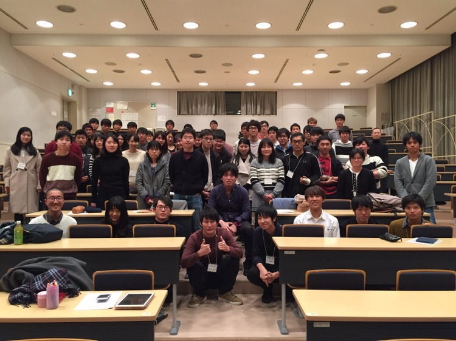

activity
勉強会は主に２種類あります。
・Step1 勉強会 ・Step2CS 勉強会
Step 1 勉強会
6年5年合同、5年4年合同、4年3年合同、、、といったように完全屋根瓦方式で各学年ごとにレベルを調整して月に1回程度、勉強会を行っています。その時にお互いの近況報告を行ったり、情報交換も行います。先輩に教えてもらったこと以上のことを後輩に教えてあげるというのが我々のモットーです。
Step 2CS 勉強会
Step2CSは非常に難関とされており、高い英会話能力が求められます。英会話能力の向上は一朝一夕にはできないため、低学年からどんどん積極的に行っていきます。こちらは二つのレベルに分けており、1-3年のジュニアクラス、4-6年のシニアクラスです。 ・ジュニアクラスでは臨床医学の知識が乏しいため主に医師としての高いレベルの一般英会話の取得を目指します。 ・シニアクラスでは一般英会話はもちろんのこと、実際に医療面接・身体診察を英語でこなします。この際Step1で身に付けた知識をフル活用します。
上記のように、在学中の6年間を通して、我々米医研において切磋琢磨し、日々努力を重ねれば、高いレベルに到達できるようなシステムになっています。とても素晴らしいシステムになってますので興味のある方、参加希望の方、交流を希望される学外の方も是非お気軽にお問合せください。米医研一同心よりお待ち申し上げております。
case
以下が活動事例です
2018/12/15 瀬崎先生講演会 USMLEコンサルタントの瀬嵜先生をお呼びして講演会を開催しました。 関西全県より約80名の医学生・医師の方々にお越しいただきました。USMLEの取得だけでなく、 それぞれの目標に対するモチベーションを高めることができました。
2020/3/3 勉強会 英語ディベートやTOEFLのspeakingなど英語でのアウトプットの練習をしました。
2020/2/21 1,2年勉強会 1,2年生で骨学の勉強会を行いました。 12脳神経の英語名やその走行などを勉強しました。スケッチ実習のコツの講義も行いました。